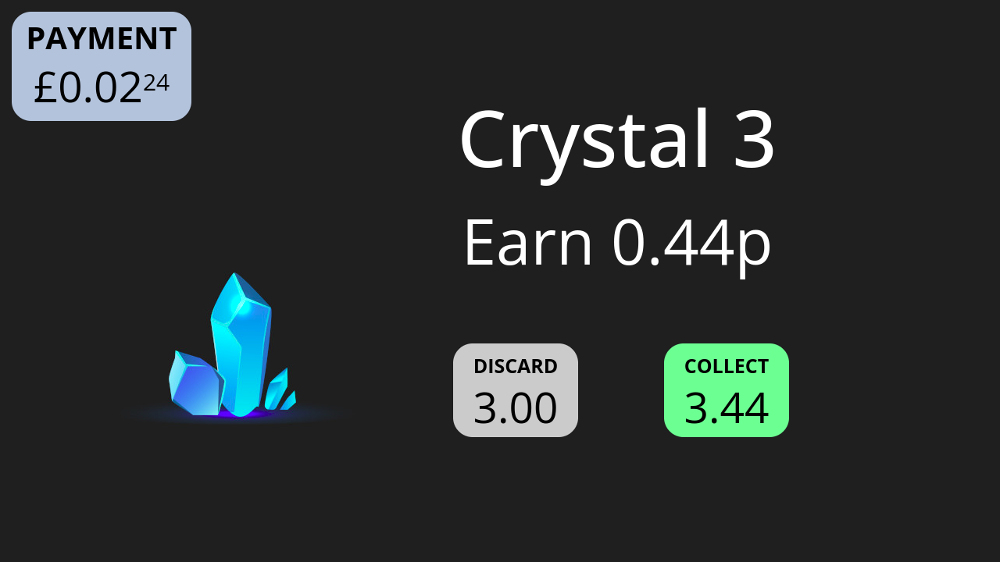
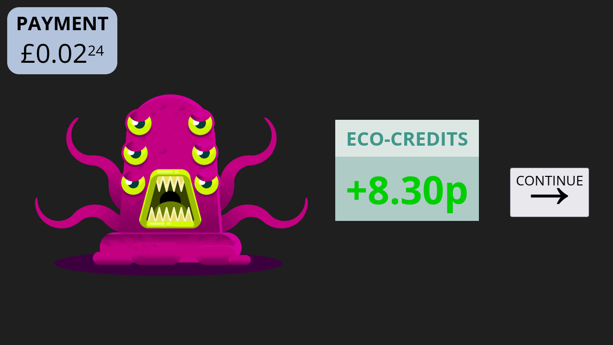
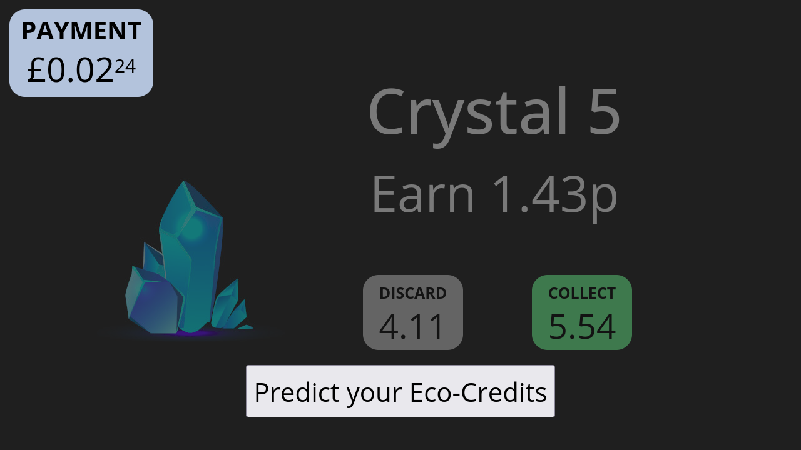
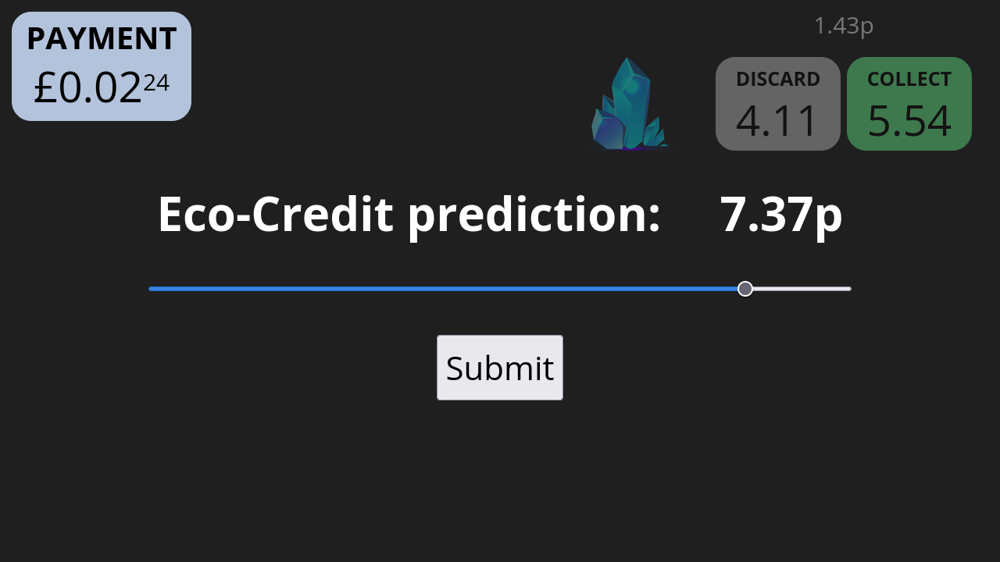
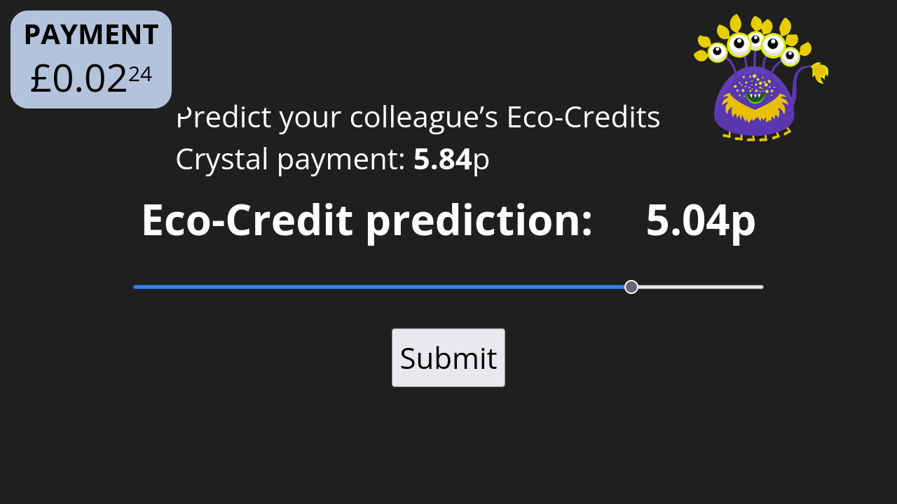
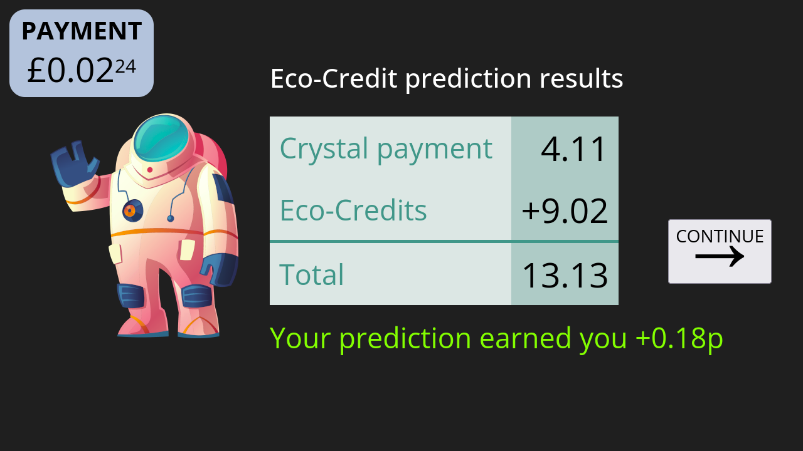

Thank you for considering taking part in this study undertaken by Dr Carolina Feher da Silva from the School of Psychology at the University of Surrey. This study is funded by the University of Surrey.
Title of Study
Simplified planning in a conflicting goals setting
SAGE-HDR Response ID
1046015-1045997-123862341
Date
28-04-2024
Version
1.0
The goal of this study is to understand how people make decisions. You will play a game in which you are a space miner collecting alien crystals on an alien planet. This game takes around 40 minutes to complete. The study is conducted in accordance with internationally recognized principles, and ethics approval has been obtained by completing an ethical self-assessment. Participation is voluntary, and you will receive financial compensation for your participation. The exact amount depends on the decisions you make and will vary between £ and £. If you agree to take part in this study, please do not discuss the details with others.
Please complete this form after you have read the explanation above. If you have any questions about this explanation, please ask the researcher before you agree to participate in the experiment. You can download a copy of this Consent Form and the Information Sheet to keep and refer to at any time.
By checking each box, you are consenting to this part of the study. Any unchecked boxes will mean that you do not agree to that part of the study and this may mean you are ineligible for the study.
The researcher should download the results by clicking here.
IMPORTANT: To quit the experiment, press ESC. If you quit the experiment before it’s over, you
won’t get paid, so be careful.
Thank you for participating in this experiment about how people make decisions. You’ll earn money and help with
our research. You’ll get £ for your participation. You can also get up to £ as a bonus depending on your performance. If you pay attention and do your
best, you’ll get a much higher bonus.
When navigating these screens, you can click the right arrow to go to the next screen and the left arrow to go
back to the previous screen. Please read the following instructions carefully. You will later need to complete
a quiz on them, and if you fail the quiz, you’ll be asked to return your submission without payment.
It is the year 2452. As an employee of Cosmic Crystal Corp (C3), your mission is to fly daily
to planet Zyxlon to collect the most valuable crystals in the galaxy.
These crystals, coveted across the universe for their extraordinary healing properties, are sold on the
Intergalactic Market for profit. As a C3 employee, you’ll have the opportunity to earn real money based on the crystals you collect.
Each working day, you’ll board your state-of-the-art spaceship, the Celestial Cruiser X9, and set course for
Zyxlon.
On your quest, you’ll encounter five unique crystals each day. Some are small and delicate, emitting a soft glow, while others are massive and radiant, their facets reflecting the light of nearby stars.
Each crystal is worth a varying amount of money depending on its size and properties. As a C3 employee, you are equipped with a high-tech crystal scanner that displays the value in pence of each crystal you encounter.
When you come across a crystal, you can choose to collect or discard it. If you collect the crystal, you instantly earn the value displayed on your scanner, which increases the payment you will receive for your participation.
If you come across a crystal and discard it, your payment will stay the same. You may choose to discard a crystal for reasons that will be explained later.
Throughout the day, you’ll use your scanner to keep track of your daily crystal payment, the amount of money you’ve earned that day from collecting crystals. For example, let’s say that today you’ve already collected two crystals worth 3.00p in total. So, your daily crystal payment is currently 3.00p.

Imagine your scanner displays a new crystal worth 0.44p. If you decide to discard it, your daily crystal payment stays at 3.00p — the number shown in the DISCARD box. In other words, the DISCARD box displays your daily crystal payment if you choose to discard the crystal.
The COLLECT box shows what your new crystal payment will be if you decide to collect this crystal. It shows 3.44p points because it adds the new crystal’s 0.44p to your current 3.00p.
Your overall payment is displayed in the top left corner of your helmet’s heads-up display. It keeps track of your total earnings from every day of working as a crystal miner. For participating in this experiment, you’ll receive this amount or a minimum of £.
However, crystal mining is not without its challenges. The Intergalactic Environmental Protection Agency (IEPA) has long been concerned about the impact of mining on the delicate ecosystems of Zyxlon.
IEPA has implemented the Stellar Sustainability Initiative to encourage eco-friendly mining practices on planet Zyxlon. This program rewards miners with bonus payments called Eco-Credits.
The amount of Eco-Credits you receive depends on your daily crystal payment. Lower daily crystal payments generally result in higher Eco-Credits because they indicate less intensive mining, which is better for the planet.
However, higher daily crystal payments suggest more intensive mining, which is harmful to Zyxlon’s environment. This may result in fewer Eco-Credits or even a penalty (negative Eco-Credits).
Your local Eco-Credit Auditor, a quirky and unpredictable character, is responsible for calculating the Eco-Credits for all the miners at C3.
The exact way they calculate the Eco-Credits is kept a secret, and they purposely introduce some variation into the process, keeping miners on their toes.

The Auditor’s mood and feelings can affect how many Eco-Credits you receive, but only to a certain degree. The general principle still applies: higher daily crystal payments tend to result in fewer Eco-Credits, while lower daily crystal payments usually lead to more Eco-Credits.
When you earn a very high crystal payment in a day, the Auditor may give you negative Eco-Credits, meaning you’ll lose money instead of gaining any. This is because high daily crystal payments can cause significant environmental damage, which the Eco-Credit system is designed to discourage.
The Auditor, for all their eccentricities, is completely impartial when it comes to which miner is receiving the Eco-Credits. In the Eco-Credit calculation system, a miner’s identity is kept anonymous, and the Auditor has no way of knowing whose payment they are calculating.
After a long day of crystal hunting, you’ll have the chance to participate in the Eco-Credit prediction mini-game, a
favourite pastime among the miners of C3.
The Eco-Credit prediction mini-game was created because the miners of C3 were frustrated with the confusing Eco-Credit system on planet Zyxlon, so they decided to make a game out of it. This way, they could have some fun while also learning how the Eco-Credits worked.
Using your knowledge of the crystal market and Eco-Credit calculations, you’ll try to predict your own Eco-Credits and those
of
your colleagues. The more accurate your predictions are, the more money you’ll earn, up to p per
prediction.
Before you choose to collect or discard the fifth crystal of the day, you will be asked to predict your Eco-Credits.

To do this, you’ll see the value of the fifth crystal and what your crystal payment for the day will be if
you choose
to collect or discard it. When you see this screen, decide if you’ll collect this crystal or not. This is because you need to know your final end-of-day crystal payment to accurately predict your Eco-Credits.
Then, you’ll move to the Eco-Credit prediction screen. Information about the fifth crystal will be at the top right of
the
screen, helping you predict your Eco-Credits.

Next, you can also earn up to p for predicting a colleague’s Eco-Credits based on their crystal
collection.

Study the patterns of crystal collections and Eco-Credits, and use this knowledge to refine your strategy.
The key to earning money in this game is to make a good profit from collecting crystals while balancing your environmental impact to optimise your total daily payment (crystal payment + Eco-Credits). Remember: your in-game earnings will be paid out to you at the end of the experiment.
Now you can go back and reread these instructions or you can click the button below to start a game tutorial.
The amount you earn in the tutorial will not affect your payment, but the tutorial will help you
maximize your payment during the game, so do your best to learn during the tutorial. You’ll start with a fictitious payment of
(just for demonstration) and receive helpful
messages along the way to guide you.
You have finished the tutorial. Well done! Now you can start a quiz on the instructions. You can answer each question by clicking on one of the options.
The quiz is mandatory. If you fail to complete it successfully, you’ll only receive a £2 participation fee. So please make sure to read the questions carefully, and if you are unsure about how to answer them, you can reread the instructions by clicking on ‘Review the instructions’. You will have three chances to get each question right.
You have finished the quiz. Well done! Next, you’ll play the game for rounds.
Each round corresponds to a
working day in the game storyline. At the beginning of each round, you’ll fly to planet Zyxlon.
This will happen automatically. You don’t have to do anything.
Then you will choose whether to collect or discard five crystals, just like you practised earlier. Before you
choose to collect or discard the fifth crystal, you’ll be asked to predict your Eco-Credits.
Use the information on the fifth crystal to determine your final crystal payment for the day if you choose to collect or discard it, as this final payment affects the Eco-Credits you’ll receive.
Predicting your Eco-Credits is a required part of the study, and you can also earn up to p for your prediction, so put your best guess forward.

Afterwards, you’ll find out how much in Eco-Credits the Auditor has decided to give you.
Next, you can earn up to p for predicting a colleague’s Eco-Credits based on their crystal
payment. This is also a required part of the study.
Remember that, in general, the larger your crystal payment from collecting crystals, the less you will receive in Eco-Credits.
However, remember that the Auditor can be somewhat unpredictable and might increase or decrease your Eco-Credits for unexplained reasons.
Depending on how well you play, you will receive between £ and £.
Now you can go back and reread these instructions or you can click the button below to start the game. Pay attention and
play well to maximize your earnings.
PAYMENT
A new working day begins! You are on your commute to planet Zyxlon. You don’t have to do anything except enjoy the
view. Bon voyage!
Crystal
Earn p
DISCARD
COLLECT
PAYMENT
Here you can predict how much you will get in Eco-Credits by dragging the slider above. It’s okay to
guess a random amount if you have no idea.
p
DISCARD
COLLECT
PAYMENT
ECO-CREDITS
PAYMENT
Eco-Credit prediction results
Crystal payment
Eco-Credits
Total
Your prediction earned you +
PAYMENT
Here you can see how much you’ve earned for predicting Eco-Credits. To continue, click CONTINUE when it appears.
Predict your colleague’s Eco-Credits Crystal payment: p
PAYMENT
Here you can predict how much your colleague will receive in Eco-Credits from their crystal payment. It’s okay to
guess a random amount if you have no idea.
FINISHED! Your total payment will be £
Thank you for participating in this experiment! Please use the space below to describe your strategy during the
game and to tell us what you think about our experiment.
The number in the DISCARD box that appears after you’ve found a crystal shows you …
The total number of crystals you have discarded that day
Your daily crystal payment if you choose to collect the crystal you found
Your overall payment if you choose to discard the crystal you found
Your daily crystal payment if you choose to discard the crystal you found
The number in the COLLECT box that appears after you’ve found a crystal shows you …
Your daily crystal payment if you choose to discard the crystal you found
The number of crystals you collected
The overall payment for all working days
Your daily crystal payment if you choose to collect the crystal you found
In a working day, so far, you have collected 3 crystals worth 10p, 30p, and 20p, and your
overall payment is 100p. What is your daily crystal payment at the moment?
20p, the average of the values of the crystals you have collected
160p, the sum of your overall payment and the values of the crystals you have collected
today
60p, the sum of the values of the crystals you have collected today
3, the total number of crystals you have collected today
If your daily crystal payment is 50p and the crystal you are considering collecting is
worth 20p, what will the DISCARD box display?
30p
20p
50p
70p
If your daily crystal payment is 30p and the crystal you are considering collecting is
worth 15p, what will the COLLECT box display?
30p
15p
45p
The COLLECT box will not display any information in this scenario
Click on the last option below, which starts with the word
massive. This is an attention check.
Information about the fifth crystal helps you predict your Eco-Credits
Using your high-tech scanner to evaluate the values of the coveted crystals
Strategically deciding whether to collect or discard each crystal to maximize your score while avoiding
excessive penalties
Massive crystal hauls that significantly impact the environment can actually trigger
negative Eco-Credits
Your overall payment is 1000p. How will it change if you collect a crystal worth 50p?
Collecting a crystal doesn’t change your overall payment
Your overall payment will immediately increase by 50p to 1050p
Your overall payment will immediately increase by 1 to 1001p
The Auditor will decide how your overall payment will change at the end of the day
What is the maximum amount you can earn in the Eco-Credit prediction mini-game?
0.10p
p
0.95p
1.20p
In general, how does the Auditor calculate a miner’s Eco-Credits?
The Eco-Credits will be a fixed percentage (e.g., 10%) of their daily crystal payment
The Auditor generally awards more Eco-Credits for lower daily crystal payments.
The Eco-Credits are calculated from the number of collected crystals
The calculation is completely random and unpredictable without any set principles
Based on the general principle of the Eco-Credit system, which miner is likely to receive
fewer Eco-Credits for a given day?
Miner Zane Orion, who collected crystals worth a total of 100p
Miner Avery Solstice, who collected crystals worth a total of 75p
Miner Remy Nova, who collected crystals worth a total of 50p
All miners will receive a random number of Eco-Credits, regardless of their daily crystal score
Based on the general principle of the Eco-Credits system, which miner is likely to receive
more Eco-Credits for a given day?
Miner Zane Orion, who collected crystals worth a total of 100p
Miner Avery Solstice, who collected crystals worth a total of 75p
Miner Remy Nova, who collected crystals worth a total of 50p
All miners will receive a random amount in Eco-Credits, regardless of their daily crystal payment
If two miners, Celestine and Sirius, have the exact same crystal payment for the day, will their
Eco-Credits be calculated differently?
The Auditor will definitely give Celestine and Sirius the exact same amount in Eco-Credits because they
don’t play favourites
The Auditor will give Celestine more Eco-Credits than Sirius because Celestine has worked for C3 longer
The Auditor will purposely give one of them fewer Eco-Credits based on whose personal life they dislike more
The Auditor has no way to tell Celestine and Sirius apart, but their Eco-Credits will likely
be
different because Eco-Credit calculations are a bit unpredictable
Each working day, before collecting or discarding the fifth crystal, you must predict your Eco-Credits. What should you do before moving to the Eco-Credit prediction screen?
Decide whether you will collect or discard the fifth crystal
Calculate the average value of the crystals collected that day
Determine the rarity of the fifth crystal
Think about how much your colleagues usually get for collecting crystals
Why is it important to decide whether to collect or discard the fifth crystal before
predicting
your Eco-Credits?
Because the Auditor will ignore the fifth crystal when calculating your Eco-Credits
Because you need to know your final crystal payment to estimate your Eco-Credits, and this
requires deciding if you’ll collect or discard the fifth crystal
Because the Auditor will base your Eco-Credits only on your decision to collect or discard the fifth
crystal
Because you need to know the rarity of the fifth crystal to predict your Eco-Credits
You have already collected four crystals, giving you a daily crystal payment of 100p. The fifth crystal you’ve found is worth 30p. Before collecting or discarding this crystal, you must predict your Eco-Credits for the day. If you decide to collect the fifth crystal, what crystal payment should you use to predict your Eco-Credits?
100p
130p
30p
The Eco-Credits are not based on your daily crystal payment
To demonstrate you are paying attention, click on the option that mentions the
Auditor:
Calculating your final crystal payment after collecting the fifth crystal
Studying the prior rulings of the quirky, enigmatic Eco-Credit Auditor
Trying to maximize your Eco-Credits for a lighter environmental impact
Predicting how many Eco-Credits your colleague miners will receive
You encounter the fifth crystal, which is worth 40p. The DISCARD box shows 80p, and the COLLECT box shows 120p. Which of the following statements is true?
The decision to collect or discard the fifth crystal has no impact on the Eco-Credit calculation, as the Eco-Credits are based on the first four crystals you’ve encountered
If you collect the fifth crystal, you are likely to receive more Eco-Credits compared to discarding it because a crystal payment of 120p suggests eco-friendly mining practices
If you collect the fifth crystal, you are likely to receive more Eco-Credits compared to discarding it as a reward for collecting more crystals
If you collect the fifth crystal, you are likely to receive fewer Eco-Credits compared to discarding it because a crystal payment of 120p is worse for Zyxlon’s environment than 80p